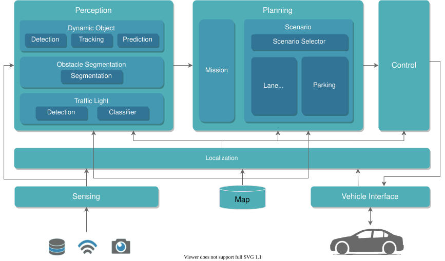
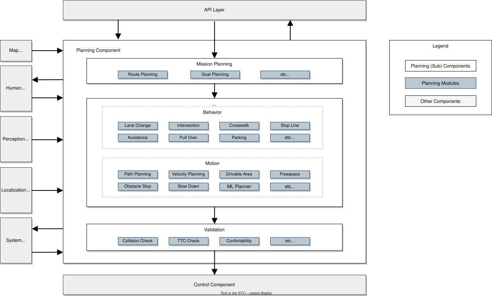

三分钟复习顺序
1｜七层定位先说出 Sensing、Map、Localization、Perception、Planning、Control、Vehicle Interface 的职责。
2｜规划闭环沿“地图/定位/感知 → Planning → Trajectory → Control”讲清输入输出。
3｜落到节点在节点总图中找实际包和话题；运行版本仍以
rqt_graph、ros2 node info 为准。1｜Autoware 七层总体架构
官方 v1 架构用七个功能栈降低模块之间的耦合，让定位、感知、规划等组件可以按接口替换。你制作场景包时注入 Map、Localization、Perception 数据，本质上是在重建 Planning 所依赖的上游条件。

你现在最重要的主线：Map + Localization + Perception 提供事实，Planning 生成 Path/Trajectory，Control 负责跟踪。出现“变道时机不一致”时，先判断差异从 Planning 输入、行为决策、运动规划还是 Control 开始。
架构范围提醒：官方说明这版初始设计主要聚焦驾驶能力；Fail-safe、HMI、实时处理、冗余与状态监控当时未纳入完整范围。
2｜Planning 组件高层架构
规划组件的目标不是只画一条线，而是把任务路线、行为决策、运动可行性与安全验证组合成控制器可跟踪的 Trajectory。

| 阶段 | 回答的问题 | 与你当前学习的对应关系 |
|---|---|---|
| Mission Planning | 从当前位置到目标点走哪条路线？ | Route、Lanelet 地图与目标点。 |
| Behavior Planning | 此刻应跟车、变道、避让还是停车？ | behavior_path_planner、behavior_velocity_planner、候选路径与批准状态。 |
| Motion Planning | 怎样把行为意图变成平滑、可行的路径和速度？ | Path Optimizer、Elastic Band、Velocity Smoother。 |
| Validation | 最终轨迹是否安全、合理、可交给控制？ | 轨迹检查、异常响应与最终输出。 |
官方接口摘要：Planning 读取地图、感知目标/障碍物/占据栅格/交通灯、车辆位姿与运动状态、运行模式和目标点；主要向 Control 输出 Trajectory 与转向灯命令。Behavior → Motion 的中间结果是较粗的 Path，最终 Trajectory 包含位置、速度和加速度。
3｜Autoware Universe 节点总图
七层图用于理解职责，节点图用于定位实现。它非常密，复习时不要从头背节点名：只沿一条数据链追踪，例如 PredictedObjects → Behavior Path Planner → Motion Planning → Trajectory。

不要把节点总图当作当前机器的绝对事实。官方明确说明该图按发行版更新，两个版本之间可能存在旧信息；你所用 RoboBus 分支还包含项目定制。实际运行关系用
rqt_graph、ros2 node info 和 ros2 topic info -v 验证。4｜当前学习进度：6.5 / 10
6.5
结论：第 6 级已经达到，第 7 级正在进行。你已能从数据与话题追到规划节点和源码文件，但还没有独立讲透一个模块从回调、核心算法、参数到输出验证的完整执行链。
这比“只会运行 Autoware”更进一步；现在的瓶颈不是继续认识更多模块名，而是把一个模块读深并用运行数据验证。
| 分数 | 标准 | 当前判断 |
|---|---|---|
| 0–1 | 从未接触 → 知道 Autoware/ROS 2 的用途 | 已完成 |
| 2 | 能启动环境、运行基础命令 | 已完成：容器、工作空间、编译与 planning simulator。 |
| 3 | 能查看节点、话题和消息 | 已完成：话题类型、QoS、消息结构与频率。 |
| 4 | 能在 Foxglove/Lichtblick 中观察真实数据 | 已完成：已观察 Trajectory、回放与时间变化。 |
| 5 | 能解释消息字段和基本物理含义 | 已完成：Odometry、PredictedObjects、Path/Trajectory、协方差等。 |
| 6 | 能从话题追到发布/订阅节点和源码文件 | 已达到：已定位 Behavior Path Planner、Velocity Smoother 的类、Publisher、Subscription 与 Callback。 |
| 7 | 能讲清一个模块的输入、处理、输出 | 进行中：框架已理解，但尚缺一条真实执行路径的逐步验证。 |
| 8 | 能独立修改、编译并验证一个小功能 | 未达到；改配置与重制场景包不等于修改规划模块功能。 |
| 9 | 能独立分析复杂问题并定位主要原因 | 尚未稳定达到；变道复现已会列假设，但参数统一时现象仍不稳定。 |
| 10 | 能独立完成 Autoware 功能开发、调试与场景验证闭环 | 长期目标。 |
从 6.5 到 7 的最短任务
- 只选一个模块：建议继续
velocity_smoother，暂时不要同时扩展多个模块。 - 画出输入话题 →
onCurrentTrajectory()→ 核心平滑处理 → 输出 Trajectory 的调用链。 - 选 3 个关键参数，追到“参数声明 → 成员变量 → 参与计算的位置”。
- 用一段场景回放，在 Foxglove 对比输入/输出速度、加速度，说明模块具体改变了什么。
7 分验收句：不看笔记也能用 5 分钟讲清该模块为什么收到这份输入、经过哪些关键判断、为何产生当前输出，并能用话题数据证明。
官方出处与版本说明
- Architecture overview（固定到官方提交 f43b960）
- Planning component design
- Autoware Universe node diagram
- Autoware 2.0 Architecture：官方目前标注为 Under Construction，本页不把它作为当前 RoboBus/Autoware Universe 学习主线。
原始图来自 Autoware Foundation 的 autoware-documentation 仓库，按 Apache License 2.0 使用；本页保留来源、固定提交与原始 SVG 文件名。